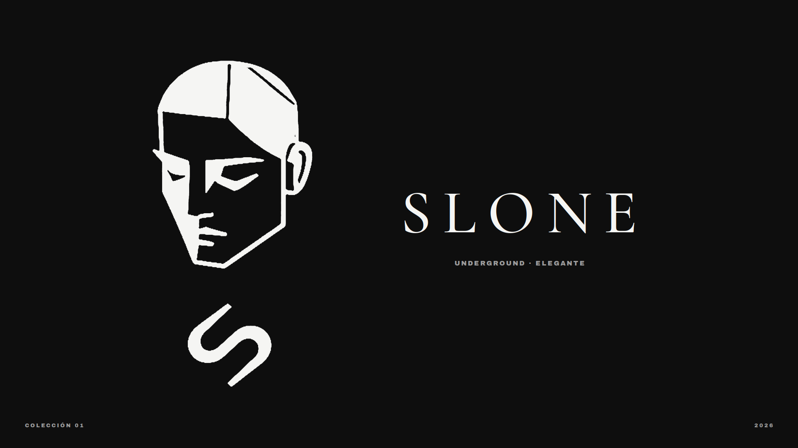

SLONE con elegancia.
Identidad visual para SLONE, una marca de ropa underground que combina la actitud de la calle con la elegancia de la sastrería. Prendas con carácter, sin necesidad de gritar.
Brand Identity / Fashion
SLONE
Brand Identity
Fashion / Streetwear
2026
Del barrio a la pasarela.
SLONE nace en la mezcla de dos mundos: la energía cruda de la cultura callejera y el refinamiento de la moda elegante. La identidad traduce ese choque en un sistema sobrio, de alto contraste y con mucha actitud.


Un rostro que no grita.
El isotipo es un rostro geométrico de ojos cerrados: calma, seguridad y misterio. Debajo, la S funciona como una firma fluida que suaviza la rigidez de las líneas rectas.

Calle y elegancia.
Una serif de alto contraste para el logotipo y los titulares aporta la elegancia. Una grotesca pesada para mensajes y gráficos trae la fuerza de la calle. Juntas crean la tensión que define a la marca.


Blanco, negro y un toque de oro.
El negro y el hueso construyen el contraste base. El gris concreto trae la textura urbana y el dorado aparece en detalles mínimos, como una joya.


Contraste como lenguaje.
El sistema se construye a partir de opuestos: claro y oscuro, recto y curvo, calle y pasarela. La S se repite como patrón para etiquetas, empaques y prendas.


La marca puesta.
Aplicaciones de la identidad en camisetas, busos y hoodies, con el logo como estampado protagonista o como detalle discreto en el pecho.